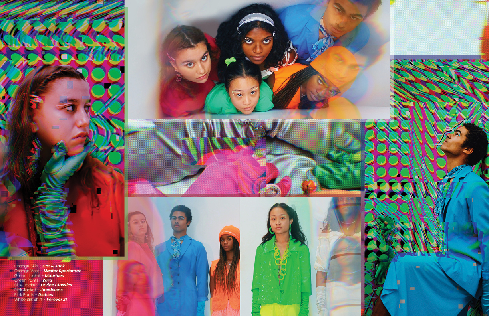
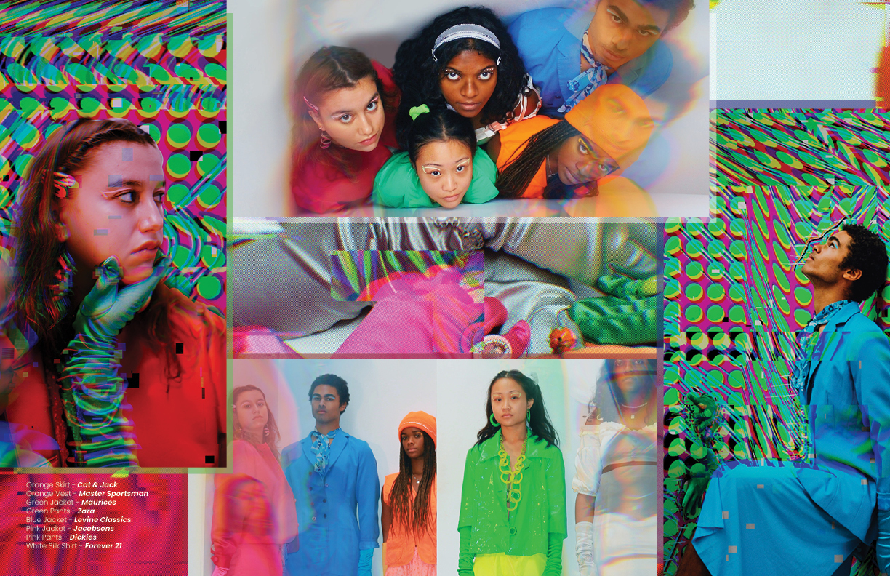
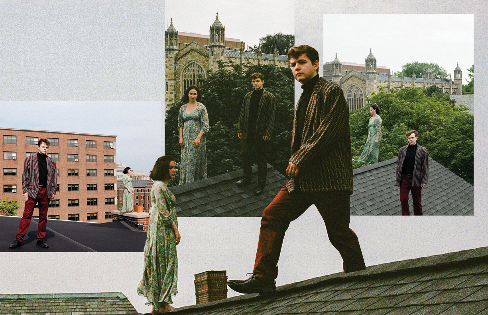
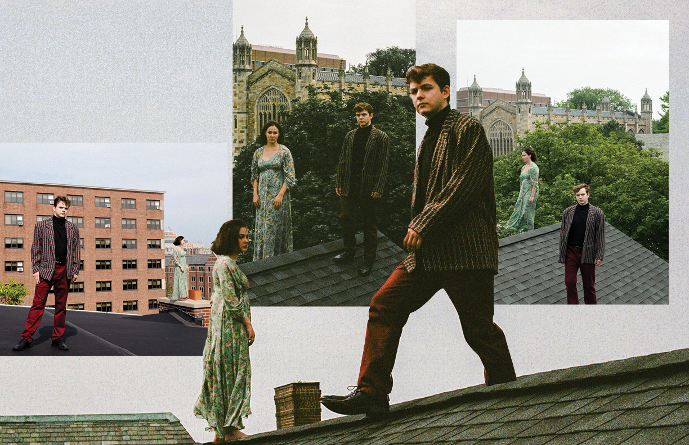

SHEI Magazine
 

This layout was for the photoshoot "Addiction," and I immediately fell in love with the colors and the mixing of different textures of the backgrounds when I saw the photos. I decided to play up the psychadelic nature of the photos by creating text in illustrator and creating motions blurs in photoshop. I also sourced colors from the images to create semi-transparent borders overlaying the photos.
This is my favorite layout that I've done because I had a really strong vision for the design from the outset. Several images I received from the photograph contained photoshopped iMessages overlayed on the photos, so I decided to design the pages around a desktop homepage. I even included small details like including the staff credits inside of the iMessage client.
Both of these layouts were for written works, which I can often find challenging because the page must be interesting enough to capture the reader's attention while still ensuring that the text is readable. I achieve this balance by styling the title to grab the reader's attention and filling white space with different design elements and colors. It is also easy to find inspiration in the written text of the story, so that typically guides my design process.
 

This spread is the longest one I've designed because it contained both a story and photos. Because of the title "Lost in Time," I wanted to create a collage to channel that feelings of being lost. I wanted the photos to cut into one another so that the viewer can see the collision of these worlds that the photgrapher has created.
Michigan in Color
This was my favorite article I wrote for Michigan in Color, and it was also my last narrative piece I published in the newspaper. I decided I wanted to make the graphic a collage in order to encapsulate some of the themes I discussed in the article about the complexities of love as a queer person of color. First, I created a blue gradient and overlaid a painting of 90s anime inspired water, because both anime and water play a large part in the content of the work. On top of that, I placed a cut out of the hands of God and Adam from Michelanglo’s painting “The Creation of Adam.” I wanted to include this painting because hands and the sensation of touch play a large part in the narrative. The painting itself was also significant because modern discussion of european often comes back to queer themes and speculation. The parental relationship between God and Adam in the Bible was also important to me because my article discusses the strain that queerness exudes on familial relationships. I wove not only the visual, but the historical elements of the work in order to create a collage that was not only visually appealing but also contextually nuanced.
The facial structure of the head at the center of this graphic was taken from a model of what is supposed to be the “ideal male face.” I chose to portray this face as robotic, inspired by the robots from the 1984 movie “The Terminator,” since the article is directly criticizing the tech industry. Fun fact: the binary numbers that appear in the background are actually the first paragraph of the article when translated from binary to english characters.